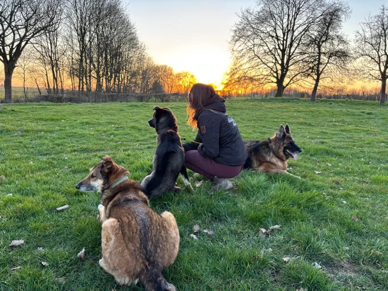
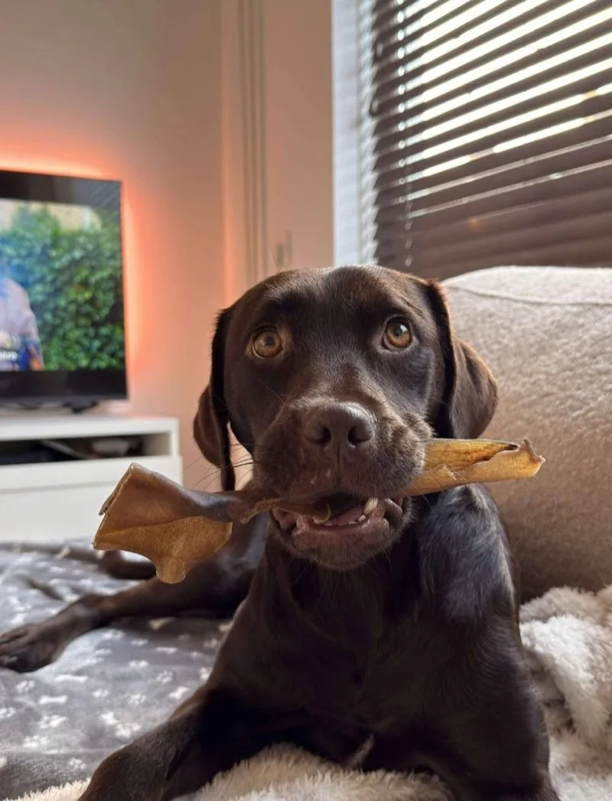
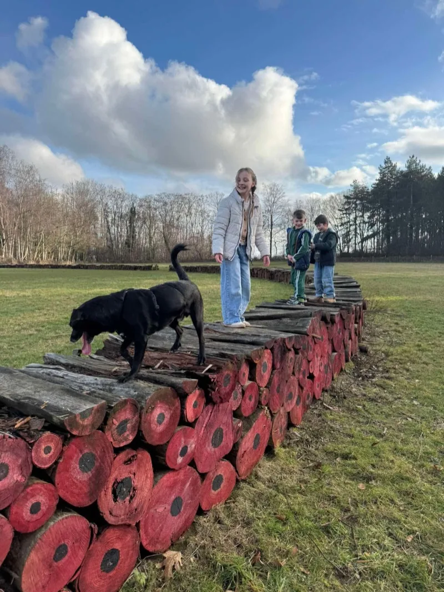
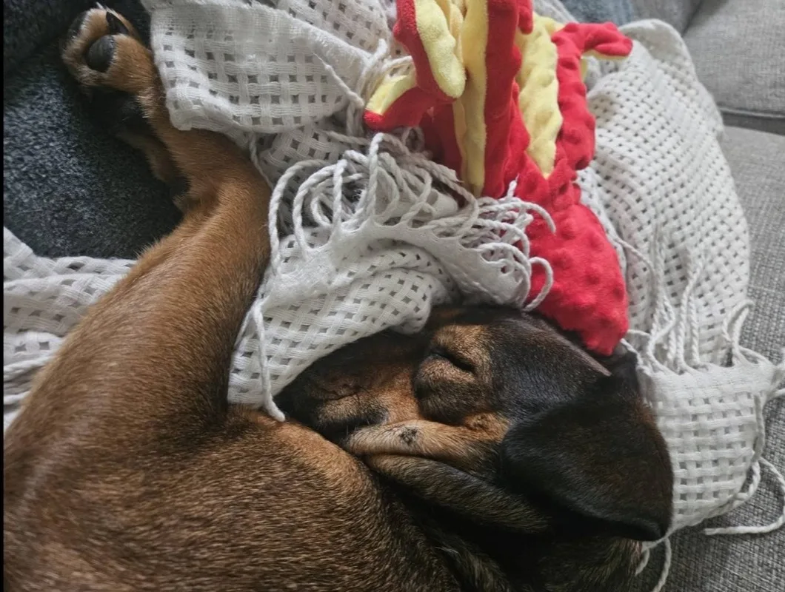
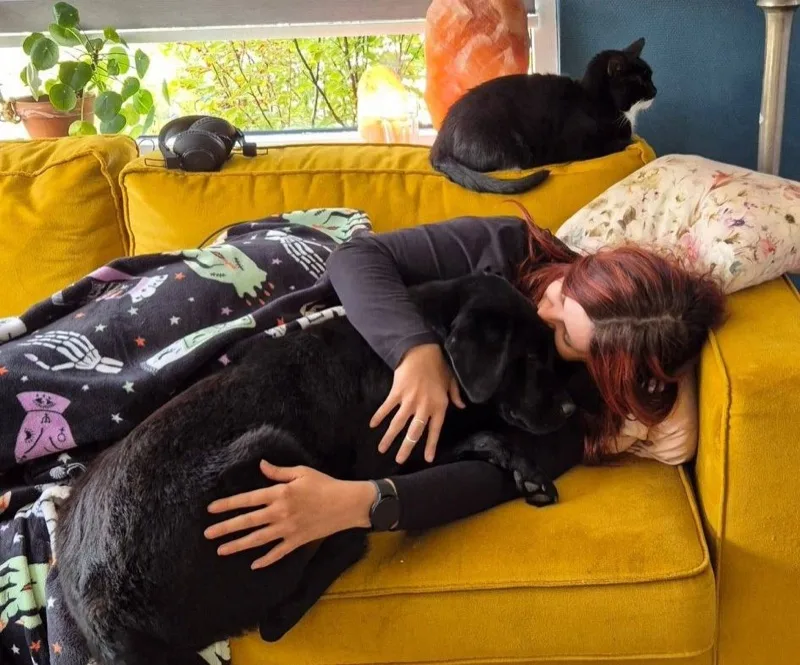
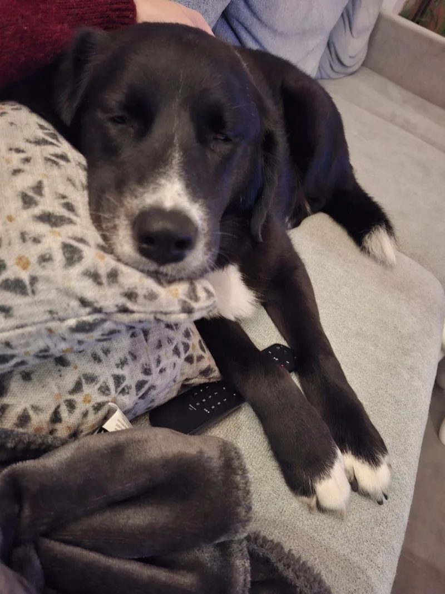
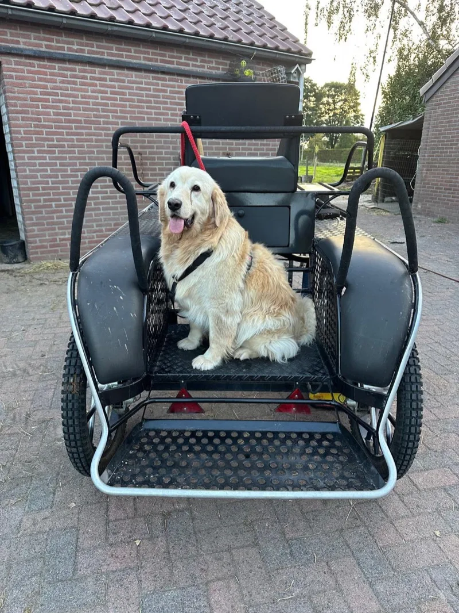
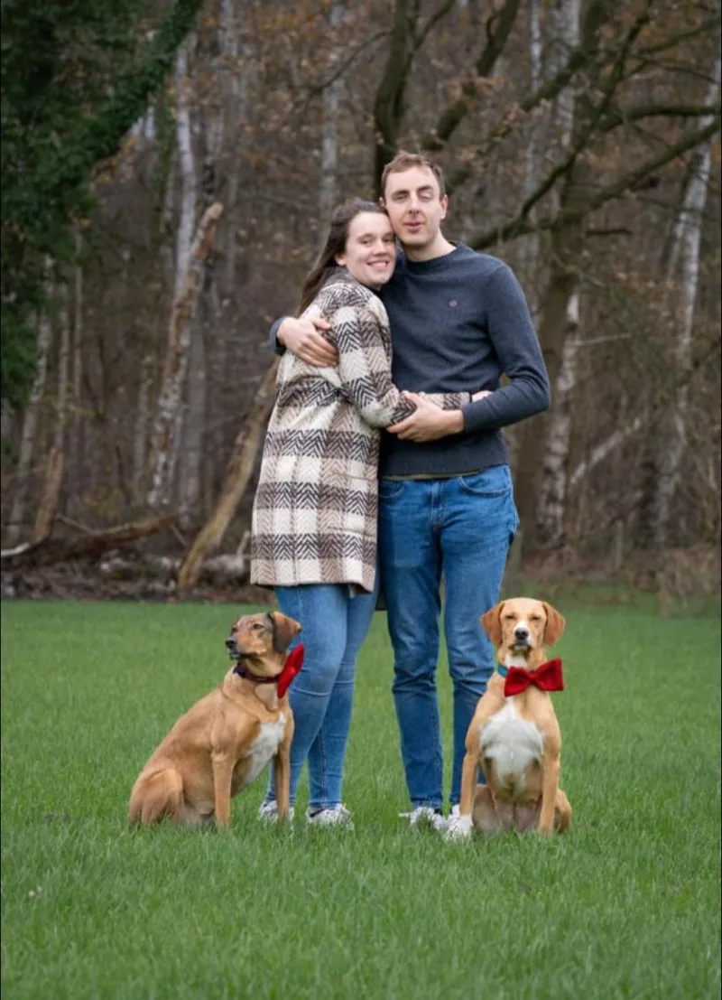

Gereguleerd transport
Je hond reist met een gecertificeerde, geregistreerde dierentransporteur die aan de officiële voorschriften voor internationaal diertransport voldoet.
Hun start was niet eerlijk, maar hun toekomst kan dat wél zijn.








Je geeft een straathond uit Bosnië of Servië een echte tweede kans — en maakt plek vrij voor de volgende hond die gered kan worden.
Gered van de straat en klaar voor een liefdevol thuis.
Gevaccineerd, ontvlooid, ontwormd en gechipt.
De bijdrage gaat naar de verzorging en de veilige reis van jouw hond
Sterilisatie of castratie zit niet standaard bij de adoptiekosten. Veel honden zijn al geholpen; is dat nog niet zo, dan kan het via ons tegen een gereduceerd tarief van €60 — of later door jou.
Van kennismaking tot thuis — stap voor stap begeleiden we je door het hele proces.
De eerste stap begint vaak gewoon met rondkijken. Op onze website vind je de honden die klaar zijn voor een nieuw hoofdstuk. Een foto vertelt nooit het hele verhaal, dus twijfel je welke hond past? Vraag ons gerust — we denken graag met je mee.
Heb je een hond op het oog? Stuur ons een bericht via het contactformulier of gewoon een berichtje via Facebook — daar reageren we meestal het snelst. Vertel welke hond je aanspreekt en iets over jezelf, dan nemen we contact op.
We sturen je een korte vragenlijst om je situatie beter te begrijpen, en plannen daarna een persoonlijk gesprek. Rustig kennismaken, je vragen beantwoorden en samen kijken of het klikt. We bespreken ook de adoptievergoeding en het transport.
Is er een match? Dan bereiden we je hond voor op de reis. Elk medisch traject is maatwerk. Tijdens het wachten krijg je foto’s en video’s, en leggen we alle afspraken vast in een reserverings- en adoptiecontract.
Je hond reist met een gereguleerd transport. In een groepsapp houden we contact en delen we updates, zodat je stap voor stap kunt meeleven tot de deur opengaat en je hond thuiskomt.
Ook na de adoptie blijven we bereikbaar. Onze vrijwilligers hebben zelf ervaring met straathonden. Een vraag of een onzeker moment? Je mag altijd contact opnemen.
We willen dat elke adoptie slaagt. Daarom kijken we naar een aantal belangrijke punten voordat we een hond plaatsen.
Voldoende ruimte en een veilige omgeving. Een tuin is een pre, maar geen vereiste.
Een hond heeft dagelijkse zorg nodig: uitlaten, spelen, socialiseren. Reken op minstens 2-3 uur per dag.
Onze honden komen van de straat. Ze hebben soms tijd nodig om te wennen aan een huiselijke omgeving.
Voer, dierenarts, verzekering — een hond brengt maandelijkse kosten met zich mee. Wees hier realistisch over.
Alle gezinsleden moeten achter de adoptie staan. We bespreken dit tijdens het kennismakingsgesprek.
Wij regelen de hele reis, zodat je hond uit Bosnië of Servië met alle vereiste papieren en een gezondheidscheck veilig in Nederland aankomt — jij hoeft niets te regelen aan de grens.
Je hond reist met een gecertificeerde, geregistreerde dierentransporteur die aan de officiële voorschriften voor internationaal diertransport voldoet.
Elke hond reist met een dierenpaspoort, een geldige rabiësvaccinatie, een microchip en de vereiste gezondheids- en invoerdocumenten.
Vóór vertrek is je hond gevaccineerd, ontvlooid, ontwormd en gechipt, en door een dierenarts gezond bevonden voor de reis.
Een straathond heeft tijd nodig om te wennen aan een leven binnen. Dit principe helpt je begrijpen wat je ongeveer kunt verwachten — al is elke hond anders.
Alles is nieuw en overweldigend. Geef vooral rust, een eigen veilig plekje en weinig prikkels — nog geen bezoek of drukke uitstapjes.
Je hond voelt zich langzaam veiliger en het echte karakter komt naar boven. Structuur, geduld en voorspelbaarheid helpen enorm.
Vertrouwen groeit en je hond voelt zich helemaal thuis. De band wordt sterker — en twijfel je ergens over, dan staat onze nazorg voor je klaar.
Maak kennis met een paar van onze buitenlandse straathonden uit Bosnië en Servië die op zoek zijn naar een thuis.
Bekijk onze beschikbare honden en vind jouw nieuwe gezinslid. Of neem contact met ons op — we helpen je graag.